For about 3 years now, I’ve been running this personal blog site using Hugo, running on Azure Static Storage Sites and Azure Front Door as load balancer/TLS protection service.
About 18 months back, Microsoft released Azure Static Web Apps, a platform built for exactly that, hosting Static Web sites, such as Vue, React, Angular, Svelte, .NET Blazor, and also… Hugo :).
As I had to migrate my resources to a new Azure subscription and tenant, I thought this was a perfect moment to migrate to SWA. While the process was surprisingly smooth, I wanted to blog about it, to help and convince others who are in the same situation as myself, giving confidence how easy it actually is.
In short, the process involves the following:
-
have a backup (copy) of the Site files in Azure Storage Account. If you don’t have them in a GitHub or Azure DevOps repository already, look into the free Azure Storage Explorer tool to copy the data aside to your local machine.
-
Depending on your DevOps platform of choice (both GitHub and Azure DevOps are supported), you need to have a repository available already to be used for Azure Static Web Apps.
-
Deploy a new Azure Static Web Apps resource from the Azure Portal, as follows:
a) Create new Resource / Static Web Apps
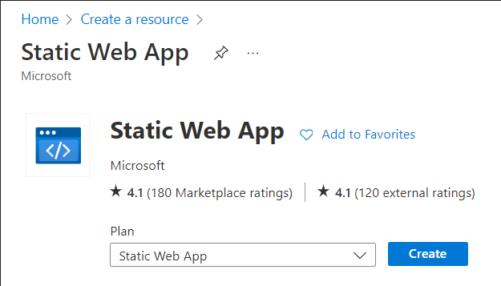
b) Complete the necessary project details:
- Subscription
- Azure Resource Group
- Unique name for the Static Site App
- Hosting Plan - Free which gives all you need for running Hugo with a public SSL/TLS certificate and hostname
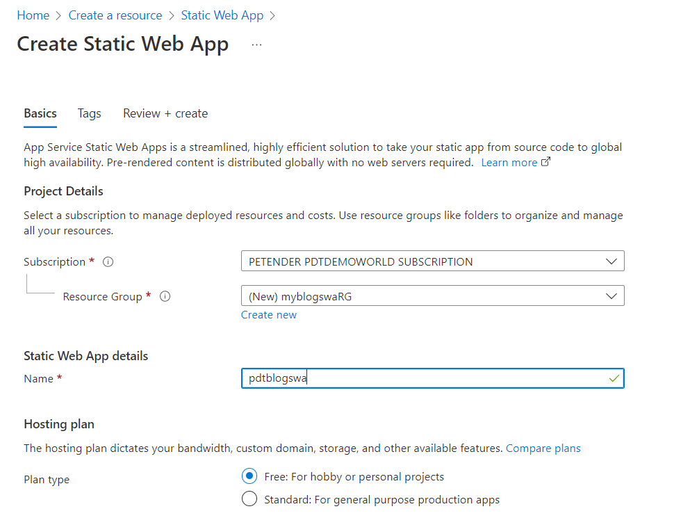
c) Next, provide the necessary deployment details. Notice SWA relies on a DevOps pipeline process, which can be GitHub or Azure DevOps. The pipeline basically gets triggered to compile the Hugo Markdown files (your blog article) into HTML-files, and gets triggered every time something is changed in the repository (like when you write a new blog post, delete a post or update a post…)
In my setup, I chose Azure DevOps, but the flow is the same in GitHub.
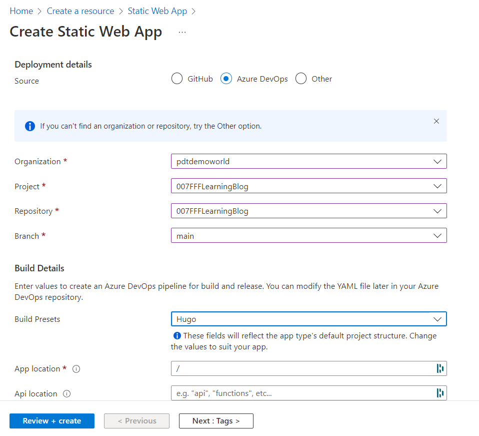
d) Confirm the creation of the resource, and give it a few minutes. Once created, navigate to the new Static Web App resource blade:
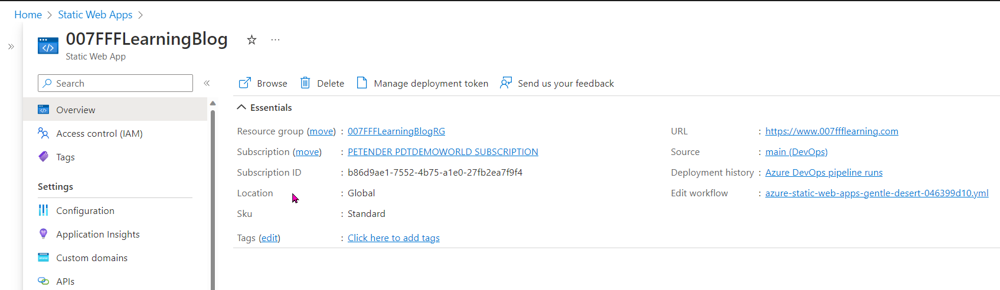
e) From here, notice the edit workflow section, which points to a CI/CD Pipeline Yml file. This is the actual “engine” doing all the work. Open this link.
this is what it looks like in my scenario:
name: Azure Static Web Apps CI/CD
pr:
branches:
include:
- main
trigger:
branches:
include:
- main
jobs:
- job: build_and_deploy_job
displayName: Build and Deploy Job
condition: or(eq(variables['Build.Reason'], 'Manual'),or(eq(variables['Build.Reason'], 'PullRequest'),eq(variables['Build.Reason'], 'IndividualCI')))
pool:
vmImage: ubuntu-latest
variables:
- group: Azure-Static-Web-Apps-gentle-desert-046399d10-variable-group
steps:
- checkout: self
submodules: true
- task: AzureStaticWebApp@0
inputs:
azure_static_web_apps_api_token: $(AZURE_STATIC_WEB_APPS_API_TOKEN_GENTLE_DESERT_046399D10)
###### Repository/Build Configurations - These values can be configured to match your app requirements. ######
Normally, you shouldn’t have to change anything on this Yml pipeline file, unless your Hugo theme tells you to make alterations. In short, whenever there is a change (“a trigger”) in the content (“include main”), it runs the job and relate task (“AzureStaticWebApp@0”). This is run on an Azure DevOps build agent, an Azure-running Ubuntu Virtual Machine, with all necessary software and tools needed to compile the website updates.
- Wait for your pipeline to complete, and run successful.
When it’s the first time, it will most probably fail, since there is no data to compile yet. Let’s fix this!!
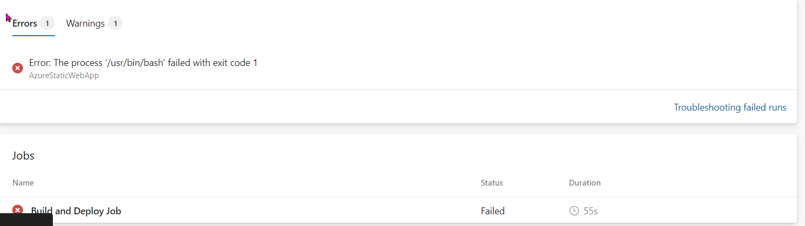
- From the DevOps environment, go to Repos (Github or Azure DevOps), and clone this repo to your local machine. I’m using Visual Studio Code, as it’s a brilliant MarkDown editor with Git integration out-of-the-box.
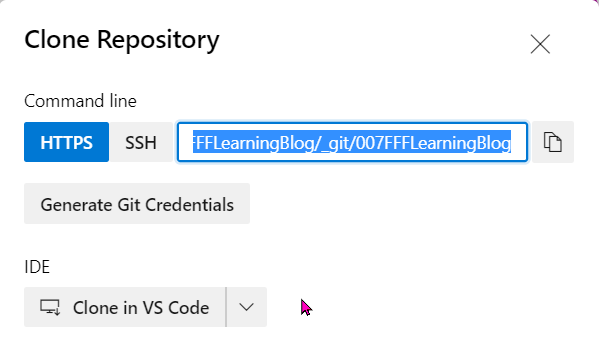
- Once the repo got cloned, copy all the folders and files from your backup, into this new repo folder. This will be recognized as a “folder change” by the Git source control process, and asking you to commit the changes and synchronize back to your repository. Perform both steps in sequence.
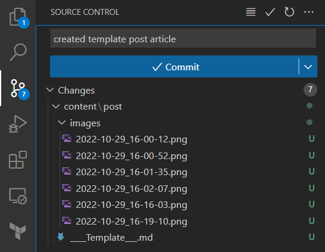
followed by the Sync Changes process - which uploads all changed files from your local machine to the DevOps repo.
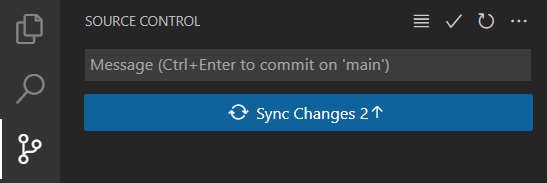
- From the DevOps environment, validate the Hugo folders and files are present in the repository.
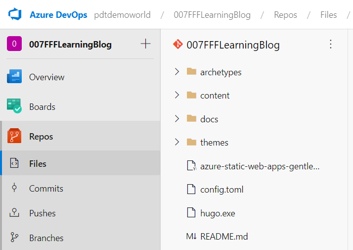
- Given the automatic trigger, the Pipeline will be picking up the change and executing a new run. Wait for this to complete successfully.
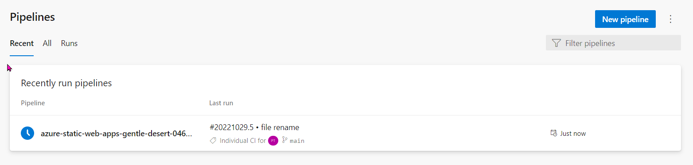
- Connect to the Azure Web App resource URL (something like https://gentle-desert-123456789.2.azurestaticapps.net/) as in my case, and behold your blog website is live!!
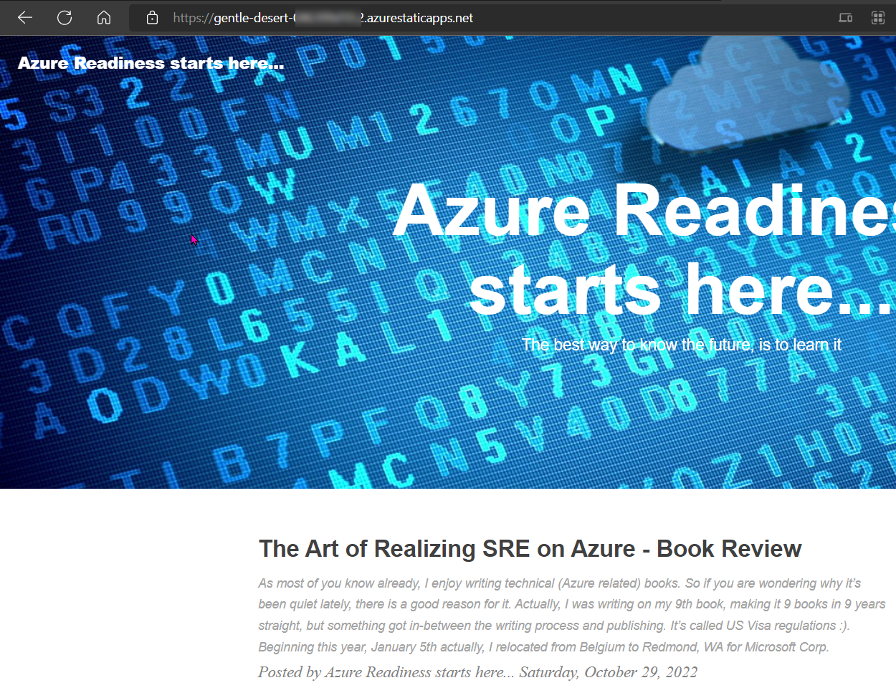
While this completes the successful migration of the Hugo blog site, we are not 100% done yet. As for now, it is only listening on the internal SWA web address, which we should update to a public domain name like www.007FFFLearning.com
Luckily, this is a nifty feature from Static Web Apps, where it allows you to add a custom domain, together with a public SSL/TLS certificate for encryption - all included in the FREE plan! Sweetly done Microsoft!
- From the Static Web Apps blade, navigate to custom domains.
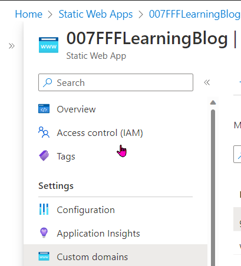
- Click ‘Add Domain’, and select the options that’s relevant to you. I have my public domain in GoDaddy, but other options, including Azure DNS itself, is also available.
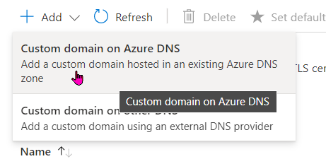
- Add the custom domain name, and copy the CName record details over into your actual DNS hosting solution management portal. Once this is done, head back over to this Azure Custom Domain blade and confirm the domain validation. Note - depending on the DNS provider of use, this might take up to several hours. Mostly, this will only be a few minutes though.
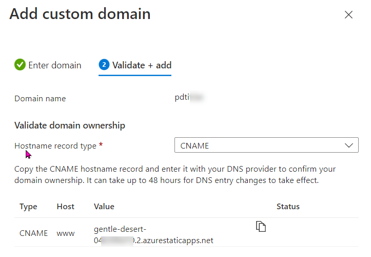
- That’s it! from now on, your Static Web Site will listen to both the internal SWA domain, as well as the public domain you have configured here.
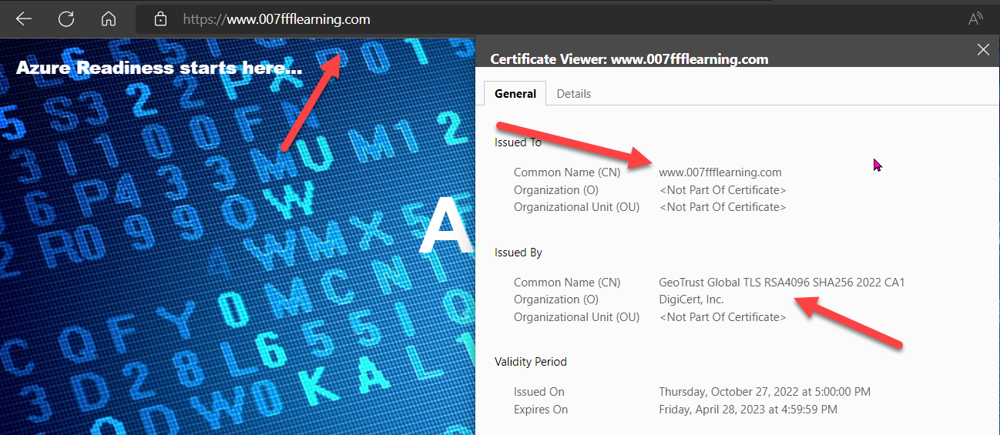
This is all it took to migrate my Hugo blog site from Azure Storage Account Static Site to the newer, Azure Static Web Apps. I’m now going to delete my old Resource Group, since I don’t need that Azure Storage Account nor the Azure Front Door anymore. saving me about $45 /month.
In the next post, I’ll describe how to add Azure Application Insights to it, to continue getting visitor statistics.
Holler me on Twitter if you should have any questions.

Cheers!!
/Peter